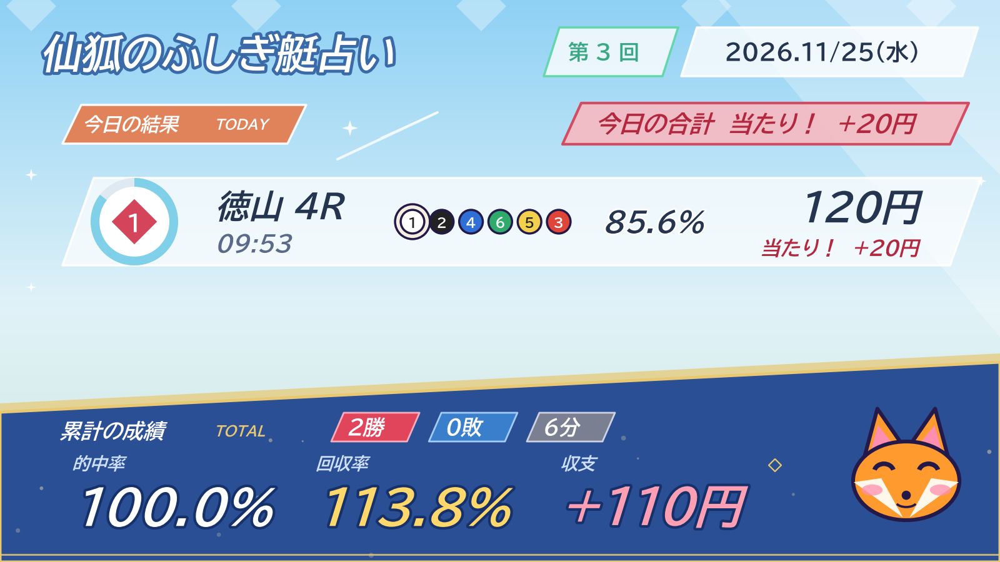

最終更新: 2026-11-26 07:52（JST）

| ID | レース | 買い目 | 2着内予想 | 着順 | 結果 |
|---|---|---|---|---|---|
| K1 | 徳山 4R | 複勝 1号艇 100円 | 85.6% | 1-2-4-6-5-3 | 的中（1着）・120円・+20円 |
実買い合計: +20円（回収率 120.0%）
| ID | レース | 買い目 | 2着内予想 | 着順 | 結果 | 払戻 | 収支 | 公式 |
|---|---|---|---|---|---|---|---|---|
| D1 | 徳山 1R | 複勝 1号艇 100円 | 85.2% | 3-4-1-5-2-6 | 外れ（3着） | 0円 | −100円 | 公式 |
| D2 | 芦屋 1R | 複勝 1号艇 100円 | 88.0% | 4-3-6-2-5-1 | 外れ（6着） | 0円 | −100円 | 公式 |
| D3 | 徳山 2R | 複勝 1号艇 100円 | 87.4% | 1-6-3-4-2-5 | 的中（1着） | 130円 | +30円 | 公式 |
| D4 | 徳山 4R | 複勝 1号艇 100円 | 87.9% | 1-2-4-6-5-3 | 的中（1着） | 120円 | +20円 | 公式 |
| D5 | 芦屋 4R | 複勝 1号艇 100円 | 87.8% | 1-3-6-2-4-5 | 的中（1着） | 100円 | ±0円 | 公式 |
| D6 | 宮島 1R | 複勝 1号艇 100円 | 87.6% | 1-3-4-6-5-2 | 的中（1着） | 120円 | +20円 | 公式 |
| D7 | 徳山 12R | 複勝 1号艇 100円 | 87.8% | 1-6-3-4-2-5 | 的中（1着） | 130円 | +30円 | 公式 |
| D8 | 尼崎 12R | 複勝 1号艇 100円 | 86.4% | 1-4-5-3-2-6 | 的中（1着） | 100円 | ±0円 | 公式 |
| D9 | 住之江 5R | 複勝 1号艇 100円 | 86.3% | 1-6-5-2-3-4 | 的中（1着） | 100円 | ±0円 | 公式 |
| D10 | 大村 5R | 複勝 1号艇 100円 | 85.8% | 1-3-5-4-2-6 | 的中（1着） | 110円 | +10円 | 公式 |
| D11 | 下関 8R | 複勝 1号艇 100円 | 88.4% | 1-4-5-2-3-6 | 的中（1着） | 110円 | +10円 | 公式 |
| D12 | 大村 9R | 複勝 1号艇 100円 | 86.7% | 2-1-3-6-4-5 | 的中（2着） | 110円 | +10円 | 公式 |
| D13 | 若松 10R | 複勝 1号艇 100円 | 86.7% | 1-3-4-2-5-6 | 的中（1着） | 100円 | ±0円 | 公式 |
| D14 | 丸亀 11R | 複勝 1号艇 100円 | 86.1% | 4-3-6-2-1-5 | 外れ（5着） | 0円 | −100円 | 公式 |
ダミー合計: −170円（回収率 87.9%）
| レース | 仙狐のふりかえり |
|---|---|
| 徳山 1R | 再確認が取れず見送ったが、1号艇は3着じゃった |
| 芦屋 1R | 再確認が取れず見送ったが、1号艇は6着じゃった |
| 徳山 2R | 再確認が取れず見送ったが、1号艇は1着、複勝130円じゃった |
| 芦屋 4R | 前のレースの結果待ちで見送ったが、1号艇は1着じゃった |
| 宮島 1R | 当日終了で見送ったが、1号艇は1着、複勝120円じゃった |
金が実際の2着内率、縦の印が予想の平均じゃ。印より棒が長ければ、予想より当たったということじゃ。紫は予想なしの全件じゃ。予想を下回った帯の数字は赤くしてあるのじゃ。帯の集計は候補一覧の予想値じゃ。実買い・買わなかった候補の表の予想は、締切前の再確認の値じゃ。再確認が取れなかった3レースは、締切前の一覧の予想値じゃ。
| 2着内予想の帯 | 件数 | 実際の2着内 | 実際の2着内率 |
|---|---|---|---|
| 85〜100% | 6件 | 4件 | 66.7% |
| 75〜80% | 4件 | 3件 | 75.0% |
| 全件（予想なし） | 19件 | 11件 | 57.9% |
予想の平均は84.3%（10レース）じゃ。
| 場 | 候補 | 2着内 | 2着内率 |
|---|---|---|---|
| 徳山 | 3件 | 2件 | 67% |
| 三国 | 2件 | 2件 | 100% |
| 宮島 | 2件 | 1件 | 50% |
| 芦屋 | 2件 | 1件 | 50% |
| その他 | 1件 | 1件 | 100% |
本日156レースが確定したのじゃ。
候補に絞った14レースでは2着内78.6%、全レースの156レースでは1号艇は75.6%じゃった。
1号艇を100円ずつ買っていた場合の試算じゃ。全レースの156レースと、候補に絞った14レースだけの場合を並べてあるのじゃ。
絞り込んだ14レースの回収率は、単勝81.4%・複勝87.9%で、全レースの単勝94.0%・複勝97.8%と比べ、単勝も複勝も下回ったのじゃ。
| 買い方 | 賭け金 | 払戻 | 収支 | 回収率 | 的中率 |
|---|---|---|---|---|---|
| 全レース・単勝 | 15,600円 | 14,660円 | −940円 | 94.0% | 55.8% |
| 全レース・複勝 | 15,600円 | 15,250円 | −350円 | 97.8% | 75.6% |
| 絞込のみ・単勝 | 1,400円 | 1,140円 | −260円 | 81.4% | 71.4% |
| 絞込のみ・複勝 | 1,400円 | 1,230円 | −170円 | 87.9% | 78.6% |
背景のイラスト素材: freekawaii（夜の神社）